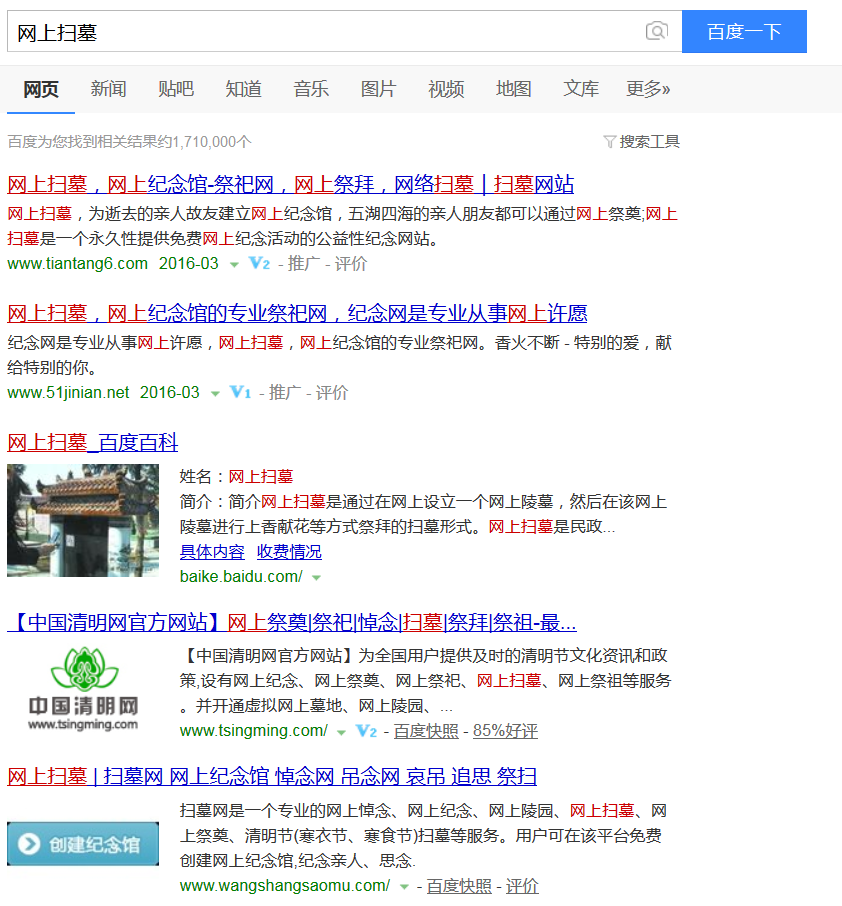
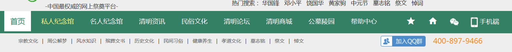

本文目录：
又快要到清明节了，由于一直在外地工作，已经记不起来有多久没有参加过家里的清明扫墓了，直系亲属中外公外婆和爷爷都已经去世。我的父母每年的大年初一、清明、冬至都会去扫墓，而我所能参加的也只有大年初一那一次，祭扫的是我的太公(婆)和爷爷。而对于外公外婆，我感到非常的惭愧，印象中到他们的坟头祭扫已经是十分久远的事情了，还有一点感到不安的是婚后也没有带着妻子去一趟。
可能有这种过节无法回家祭扫的情况的人不只是我一个，所以我在想是不是能把祭扫活动也搬上网，这虽然是一个比较偷懒的想法，但是起码也可以聊表一下对已故亲人的思念之情。接下来的内容从现实生活中我们为什么要祭扫，我们怎么样祭扫开始谈起，最后引出网上祭扫的可行性分析，接下来如果真的有时间去开发一个网上祭扫平台的话，就可以以此文章作为开始。
在去网络上搜索祭扫的具体内容之前，先介绍一下我们家一般是怎么做的。时间上开头已经提到过了，一年中有三个大节日是需要祭扫的：年初一，清明和冬至。具体不同节日的祭扫步骤大致相同又略有区别。年初一的祭扫我们把它当作是给先人先拜个年，于是会带上蜡烛、红纸，来到先人的坟头之后点上香火和蜡烛，然后每个人手持三柱香，先要背对坟头三拜天地，然后再转过身面向坟头三拜先人，并说几句祈求祝福的吉利话，之后对坟墓做一些清理和打扫工作，去除杂草，检查是否有破损等等，打扫干净之后，开始压红纸，具体是将红纸和黄纸折成长方形，在坟墓的中间和两边各压上一条，压纸的用意刚刚百度了一下，大致是为了让世人知道这座坟是有后人的而不是孤魂野鬼，而红纸一开始是表示家中有喜事的意思(过年也算一喜吧)，压好纸之后接着便是放鞭炮，用意好像是驱邪，最后在临走前再双手抱拳先三拜天地后三拜先人，并告诉先人下次过节再来探望。清明和冬至由于我很少参加了，但是依稀记得步骤是差不多的，只是少了红纸和蜡烛，但是会多一个烧黄纸、锡铂和供俸食物的步骤。近年来放鞭炮烧纸的越来越少了，特别是对那些在山里的土葬的坟墓，容易引发山林火灾，多鼓励大家采用鲜花来表达哀思。
介绍了自己家里祭扫的方式后我们来看看网络上大致的一些介绍，我们老家有句俗话叫“隔地隔乡风”，意思是说相隔一亩地的隔壁村子就有不同的风俗习惯，所以各地的具体细节就不展开太多了。
传统的祭祖有三种形式，一是较为普遍的方式，即在祖宗葬地举行，俗称“上坟”，也就是扫墓，由家里的男人携祭品香纸到坟前，摆放祭品、水酒，然后烧纸、焚香、奠酒、行礼，其间还压坟头纸。上坟习俗尤以清明上坟最为隆重，前一天早上还要去给祖先坟上“添土”，以示家族人丁兴旺。大多数农村家族，儿子结婚，也要去上坟，含义是告诉祖宗，儿子成家，人口又多了。另外， 人死后第7天黎明，家人到坟前祭奠致哀，称“垒七”。此后每7天一次，一般“五七”而毕，也有垒到“七七”的。人死第100天时亲属儿女备供品祭奠，叫百餮，旧时有的扎上摇钱树，纸箱，纸柜焚化坟前，现在只是烧些纸钱。第二种方式是家祭，即不到坟上去，或与上坟同时进行，把写有直系宗祖的牌位或谱系图供在正堂或“家庙”，全家或全族人一齐祭祀，在家祭的称“请家堂”，仪式十分庄重。还有另一种形式是“遥祭”，也叫“请”，因天气不佳，不能出门，或是离乡客居外地，不能亲临墓地祭祀，便在家中或附近野外设祭，向着故乡祖先墓地方向，举香作揖恭请先祖享祭。
当自己心里冒出来网上祭扫的想法的同时我就已经想到肯定已经有人已经在我之前想到了同样的方式，应该已经有现成的网络平台可以进行在线祭扫了，果不其然，百度了一下“网上扫墓”可以找到相关内容有1710000个，而排在前几位的都是一些已经比较成熟的在线祭祀网站：

而百度百科中也有人对网上祭扫给出了明确的说明：
网上祭扫进入本世纪以来随着互联网的迅速发展而产生的一种全新的祭祖方式，它是借助互联网跨越时空的特性，将现实的坟墓“搬”到电脑上，方便人们随时随地祭奠己逝亲人。 网上祭扫不悖于传统祭扫方式，是传统祭扫方式的继承与延伸。通俗的讲就是利用网络进行祭扫活动，网络祭扫是对现实祭祀的一种补充。各类祭祀网站上用户可以自主创建坟墓，直接通过鼠标点击和拖拉“供品”和“祭品”，模拟完成动作逼真的献花、点烛、烧香、献祭品等传统祭奠活动；也可以敲击键盘发表留言、追忆文章以表达对逝者的思念。
进一步浏览了这些网站已经发现一个通病就是这些网站都做的太过复杂，可能对于网站本身来说并不一定是坏事，提供了更多的功能嘛，但是对于想要纯粹的想要在线祭扫的人说或许看上去有一点乱，光看导航菜单，下面这几个网站就有如此丰富的内容：

还有一些网站在首页上晒出了先人的照片，感觉也不是很舒服，这里就不放图了。
所以我想做的一个网络祭扫平台是这样的，最原始的想法就是用户可以在平台里给先人建立一个墓碑，之后提供一些献花、点烛、烧香、献祭品等传统祭奠活动的功能，也可以在墓碑下面进行留言或者撰写追忆文章以表达对逝者的思念，同时可以将页面分享给其他亲人一起进行祭扫。只需要这些简单的功能就可以了，界面做的尽量的简单和小清新一点。接下来有时间我会去找一找看有没有现成的开源网站搭建平台可以满足这几点需求，或许没有能够正好满足的需要自己开发，也要看一看怎么快速的建设一个这样的平台。
在平台还没有开发出来之前，仅携妻在此遥祭我已故的亲人：爷爷，外公、外婆。焚香叩首，愿安好，请保佑大家健康，顺利！